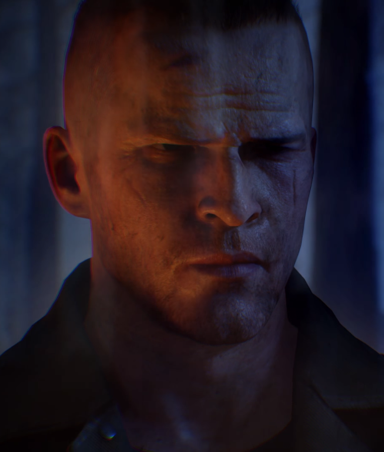
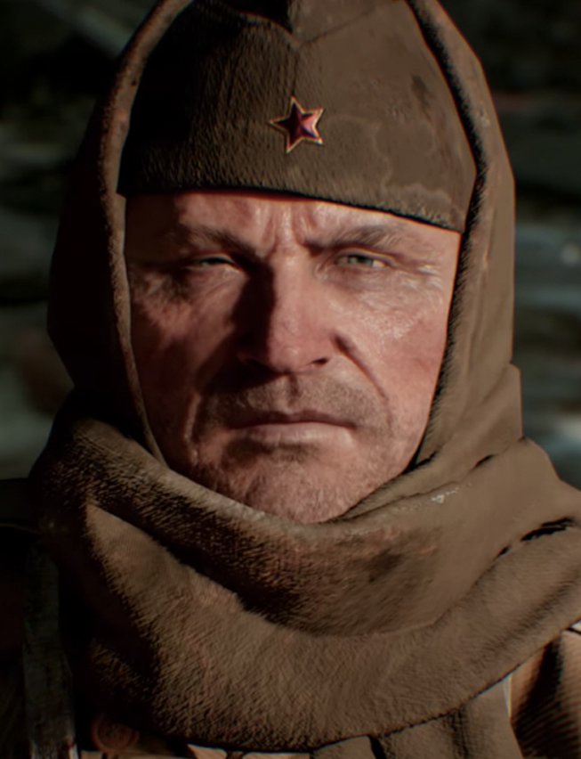

How it started

"Edward Richtofen: 'With all due respect, Doctor Maxis, this is a breakthrough of unimaginable proportions.' Ludwig Maxis: (Sarcastically) 'What? That you moved a walnut a few feet? Yes, Edward, we will improve the human condition by revolutionizing the walnut industry. I can see it now: "Edward's Walnut Delivery".' Edward Richtofen: 'Don't be optuse." Ludwig Maxis: (Angrily) 'How DARE you call me that! We are at war, Edward! (slightly calmer) I will admit that there is promise here, but until this war is won...' Edward Richtofen: 'Correct me if I'm wrong, Doctor Maxis, but Group 935 is a research organization. What was the motto? "To improve the human condition." What business of ours is this war?' Ludwig Maxis: (In a defeated voice) 'Fine, Doctor Richtofen, I will let you in on a little administrative secret: we are finalizing a deal with the Nazi party. We need funding, we need equipment, they need new weapons. Chances are this war will end soon with a treaty or two and we will be in a much better position to help the world.' Edward Richtofen: 'Are you certain this won't have massive defections? We have scientists from all over the world working with us.' Ludwig Maxis: 'That is why it is with utmost confidence that I share this with YOU. No one will know of this. This is simply the breaking of an egg to make an omelette' Edward Richtofen: 'Think of the tactical advantage we will have...' Ludwig Maxis: Think of the cost, think of the time! We can provide the Nazis tactical expertise in various areas without putting all our eggs in your (angrily) walnut basket. Good day, Edward, and get back to your real work.' *Feet hitting the ground and a door slamming can be heard*
Here Richtofen was just told that Group 935 was working on element 115 just to aid the Nazis with their war, of course he didn't agree with that and wanted to continue with the "Motto" of 935. Here is the quote that he says about it;
Edward Richtofen: 'What a jerk. I think Doctor Maxis has lost his perspective. No matter...we will do this on our own and publish the findings before he has the chance to...'
Dr. Schuster: 'You're not suggesting that Dr. Maxis would steal this technology and perfect it without us, are you?'
Edward Richtofen: 'Entry 42. Date: January 4th, 1940. Dr. Schuster and I, despite mounting pressure from Dr. Maxis, have continued working on the matter tranference prototype. We have made great strides in the last thirty days and are ready for our first human subject. If our calculations are correct, we will be able to send a test subject to the receptacle station sitting thirty blocks away and behind a cinder-block wall.' Dr. Schuster: 'Are you sure you want to do this Dr. Richtofen?' Edward Richtofen: 'Nein, Dr. Schuster, this must be done. Quickly, put in your earplugs and power up the machine.' (Teleporting noise is heard)
It is at this moment that Edward is teleported to the Moon and sees the large pyramid structure. As he examines the structure, later known as the MPD, he is aware it doesn't even have a spec of dust on it and appears to be in brand new condition. He then goes to touch it and once physical contanct is made, Richtofen gets shocked even though the pyramid isn't hooked up to anything and doesn't seem to hold any electrical properties. Soon after, he hears a voice, mistaking it to be Dr. Schuster event though he isn't there. Soon after, Edward is teleported again and is placed in the Jungle of Shangri-La, where he soon meets the native people who capture him. When he realizes that these people are primitive in nature and so he rules them like a god. He finds a large supply of element 115 and has a massive alter built for him.Edward Richtofen: 'Is there a power outage? Why is it so dark? I feel almost...weightless. How very unexpected. Dr. Schuster? Hello?' (Clicking can be heard) Edward Richtofen: 'Ah, I can see now. Oh my God. I am standing in a circular cave, surrounded kind of machine like, it's nothing like I've ever seen before. It looks almost alien in nature. There's a pyramid structure at the center of the room. I'm going to try and carefully touch it.' (Shock is heard as Richtofen touches it) Edward Richtofen: 'Ahhh! Static Electricity. It's sharp to the touch. Very cold. Not a speck of dust.' (Richtofen bangs on it) Edward Richtofen: 'Hmm, might be hollow. The chamber's quite large. I see what looks like capacitors at the ceiling of the chamber. There are no obvious connections to the anything electrical. What is this place? Dr. Schuster, is that you? Dr. Schuster! Look at this. It appears to be covered in some kind hieroglyphic language. I've not seen anything like it before. Why are you whispering to me? There's no need for that.' (Odd noise is heard) Edward Richtofen: 'Was ist los? (German for "What's the matter?") Do you hear that? It sounds like...' (Loud static and noise is heard) Edward Richtofen: 'My God what happened? I seem to be in some kind of jungle. I can't be certain of where I am.' (Jungle noises are heard) Edward Richtofen: 'Oh no!'
After Richtofen had teleported and didn't come back, Dr. Schuster panicked and did everything he could to bring back Richtofen, and after a month passed, he lost hope of getting his companion back. Though just as he had appeared to give up hope, Richtofen came back and seemed to happy. When asked why he was the way he was, he replied that he had found a way to speed up their research and how to create more than what they were, that he had found a new thing that would hold all the answers. After Richtofen had touched the pyramid, whatever the spark had generated, it caused Richtofen to hear voices and through the month that he had been gone, he had been driven slightly insane. Soon he began to form his own orginization, by gathering defectors in the organization, under Maxis's nose and had made a secret lab on Moon where the Pyramid was and they started research on the moon. Richtofe kept up the charade for two years, and finally he had a breakthrough and placed a fellow scientist named Dr. Groph, as the head scientist to discover how the Pyramid worked and record his findings.Dr. Richtofen: 'Gentlemen, for two long years we have toiled here and at Eagle's nest to build up fortifications. For two long years we have taken equipment to build up our labs. For two long years we have worked under Group 935, believing that Dr. Maxis truly wants to help the world. For two long years we've led a double life. Today that all ends.' (Inaudible conversing is heard from crowd and continues through Richtofen's speach) Dr. Richtofen: 'I bring to you what this project is all about. What I have worked to keep from my enemy.' Dr. Groph: 'What is it Dr. Richtofen? It looks Alien.' Dr. Richtofen: 'It is an ancient vril machine. And you Dr. Groph, are now the lead scienist here at Griffin Station.' (Applause for Dr. Groph is heard) 'You will be the one to discover how it works' Dr. Groph: 'We must first discover what it does.' Dr. Richtofen: 'Nein, Dr. Groph, I know what it does. It is a direct connection to another dimension.' (Crowd begins conversing again) Dr. Groph: 'Preposterous!' Dr. Richtofen: 'No more preposterous than teleporting you all to the moon and building Griffen station is it?' Dr. Groph: 'I suppose not, how do you know what it does?' Dr. Richtofen: 'I found many interesting vril artifacts here. I have decoded some of their language, all signs point to this device being a stable gateway to the Aether.' (Loud conversing again) Dr. Schuster: 'Dr. Richtofen, I am aware of a project being run by Dr. Maxis at Der Riese concerning Vril.' Dr. Richtofen: 'As am I. I am going back to my port at Group 935 to continue the charade. I will be finding out just how much information Dr. Maxis has on vril. Once the machine is operational, I will enact my plan and return. Gentlemen, let the games begin.' (Applause is heard.) Dr. Richtofen: 'Shhhh, the voices are so loud!'
Soon after Richtofen leaves and continues the charade at Group 935, Dr. Groph and Dr. Schuster find a way to power the machine when they kill a rat by the structure. They soon found out it ran on human life and Richtofen tells the two to kill as many people as they needed to power the machine. But Richtofen's true intentions are to enter the machines and become a God. While they are doing their best to do as told, Richtofen continues to aid Maxis in his work to create an undead army that can be controlled. Many new test facillities pop up because of this research such as Verrückt, and Kino der Toten. Verrückt is the first to house the zombie experiaments, but they all were failures and were left to die. Kino der Toten was used to show off products to investors and to show the progress of Group 935 and the uses of Element 115 and what it can do, mostly when it came to weapon advancement. Dr. Maxis creates his Ray-Gun while Dr. Richtofen creates the wunderwaffe dg-2 and the monkey bomb using the element 115. Group 935 is in dire need of element 115 and continues to scour the earth for it. This is how the Shi No Numa facility is created. Richtofen's insanity grows and so does his lust for power. The MTD and the wunderwaffe dg-2 are Richtofen's greatest accomplishments. Maxis promises Richtofen that he would mass produce the wunderwaffe dg-2 for Richtofen, to the Nazi party but has no intentions on fufilling his promise. Maxis then continues to further his research and steal Richtofen's plans for the MTD which drives a hate filled wedge between Richtofen and Maxis's relationship. Richtofen then tampers with Maxis's experiments almost having mastered his version of the MTD.Dr. Richtofen: 'Another day, another failure. This time subject N3WB just slightly improved. The Russian subject stills smells like urine. Even after he was given a bath and deloused twice. I think I might have killed the specimen from Mexico. His spleen is on the floor and he's not moving anymore. I can verify with certainty that the barrier is not located in the spleen. Dr. Maxis must continue no matter the cost. I wonder what he might think on my experiments on the little girl... ...I still have had any luck on reprogramming any of the live specimens. Dr. Maxis says the key to unlocking the human mind will be more easily discovered on someone who isn't dead yet. I am not convinced. The army is stored until I can fix this, this trust barrier. Oh, apparently someone in security found a spy today, they are delivering him from Verruckt, to replace the one that I broke...'
Element 115 has the ability to reanimate corpses, but there is no controlling them after they are brought to life. Richtofen experiments on three subjects; a Mexican, a Russian, and Japanese, and of each he performs experiments of which kills the Mexican subject. Not long after the Mexican subject dies, group 935 finds it's first spy. This spy is housed in Verruckt. Tank Dempsey is put as the head of a rescue team to save the spy, as outlined in the first Black ops zombies. When you listen to the radio logs Richtofen reveals that the spy is already found in Verruckt and he suspects that at least two more spies are in the group.Edward Richtofen: '...It would seem that the OSS realized that we have captured one of their spies. They tried to send a rescue team to Verruckt that was awful-the worst batch of test subjects. I suspect that there are other moles in the orginization. Dr. Harvey and Dr. Peter McCain to be precise. Dr. Maxis (static) doesn't have any Americans in Group 935, no matter how much genius they have. Stupid Americans with their apple pies and baseball and children.'
The Verruckt rescue mission is a complete failure and everyone is killed besides Tank Dempsey. He is captured and given to Richtofen as a replacement for the Mexican test subject. Richtofen also discovers that the element 115 has a side effect of memory loss, hence why our main four don't remember their pasts well. Finally, when the MPD is full and Doctor Groph informs Richtofen and tells him it is ready for him. Richtofen is thrilled and starts planning to put operation shield into motion. Soon after, Richtofen finds out that Dr. Maxis did not keep his promise about mass producing the D-2. This sends Richtofen into a pychotic rage. He now alters his plans that now involve killing Dr. Maxis and his beloved daughter, Samantha.Edward Richtofen: '...As for the control group tests, they have been put on hold. Recently I discovered that Doctor Maxis has not been mass producing the DG-2 as he swore he would. If he won't move those plans forward, then I won't continue following his dream of an undead army! He doesn't deserve his perch of power! He doesn't know what to do with it, but I know just what to do with him...and I'll take care of that little brat when I get the chance too...'
When he returns to Der Riese for more testing with Doctor Maxis, they create the first hell hound by mistake. Doctor Maxis uses Samantha's pet dog Fluffy as the test subject which causes Samantha to wander into the lab looking for her dog. Richtofen seizes the opportunity, locks the two inside with Fluffy and leaves them to die..png)

Dr. Maxis: "If you had done it to my specifications then it would have worked, wouldn't it? As usual, your incompentence has- (Hellhound spawn noise heard) Dr. Maxis: What? Dr. Richtofen: Do you hear that Doctor? Dr. Maxis: Quiet you fool! Test number six is a failure, but the experiment has caused some kind of electrical force to energize within the chamber. Well, open the door! Dr. Richtofen: Doctor, I don't think- Dr. Maxis: Open the door NOW! Door opens, Dog growls. Samantha: Daddy, what are you doing with Fluffy? Dr. Maxis: Damn it, Samantha. I told you to never come in here. Edward, get her out of here. Dr. Richtofen: Yes, Doctor. (the dog growls and Samantha screams) Samantha: What's wrong with her? Daddy, what did you do? Fluffy! Dr. Maxis Come back here! Samantha. Stop her! Easy. Come here, Samantha. Good girl. Gently, Samantha. That's not Fluffy anymore. We must get out of here. (door closes) Dr. Maxis: What? Edward what are you doing? Open the door. Edward, open this door now! Samantha: Dad, I'm scared. Dr. Maxis: Don't you....Stay by me Samantha. Dr. Richtofen: Goodbye Doctor Maxis. (power is activated, Edward laughs)"
When Richtofen teleports Maxis, Samantha, and Fluffy, They are all teleported to different places. We do not know where Fluffy was teleported, but we can only assume that Maxis was teleported inside the tunnels of Buried. Samantha was teleported to the Moon, and is running around lost in a hysterical mess through Gryffin Station and accidentally falls into the MPD. This is how Samantha Maxis becomes our first Announcer in zombies. The MPD controls the zombies due to its Vril technology. Samantha now resides in a dimention called the Ether. When Richtofen returns to the Moon base he is furious with the outcome and tells Groph to find Maxis and convince him to get Samantha out."(alarm sounds 'Intruder Detected-Recieving Bay' Dr. Groph: Can you repeat? Dr. Schuster: She's coming right towards the- (Samantha's scream is heard) Dr. Groph: Get her! Dr. Schuster: Get back here! (Samantha screams retreating, running footsteps are heard) Dr. Groph: Nein! Do not let her- (A loud bang is heard along with smashing glass and the hissing of gas is heard.) Dr. Groph: Dammit! Dr. Schuster, find a way to get her out of the pyramid. I will contact Edward and let him know there has been an incident- (static)" "Edward Richtofen: (static) How did she end up there? No matter, I know what must be done. In the meantime see if you can find Dr. Maxis, perhaps he can talk some sense into her. Dr. Groph: Did you not deal with him already? Edward Richtofen Yes, but if the child ended up here, then Maxis must be somewhere too. Find him. Dr. Groph How do you propose- Edward Richtofen: Dr. Groph I cannot do everything for you. I leave this in your capable hands. There is much to be done." "Dr. Groph: Bring him here, immediately. (Gas hissing and bangs are heard followed by the sound of a teleporter. The thumping of someone landing is heard afterwards.) Dr. Schuster: Greeting Doctor Maxis. Ludvig Maxis: Schuster! I should have known. Where is that rat Edward? Where are we? And how did you get me out of that wreched tunnel- Dr. Groph: None of that is important right now. Allow me to fill you in. (static) Ludvig Maxis: Samantha, honey? Daddy is here. Come dear, please. Open the machine. Daddy will not let them hurt you anymore. Honey? Daddy knows he has made some mistakes, I am truly sorry that you were put through so much. When your mother died, I could not bear the thought of losing you too, that's why I kept you so close. I did not mean to neglect you, I just wanted to know you were safe from harm- (Hissing gas, Samantha is heard crying.) Samantha Maxis: Daddy! Ludvig Maxis: I love you Samantha. Samantha Maxis: (sobbing) I love you too Daddy. Ludvig Maxis: Can you do something for me? Something very important. Samantha Maxis: Yes? Ludvig Maxis: Kill them....all. (Gunshot is heard) Unknown: No! (gas hisses and Samantha laughs) Dr. Schuster: We are doomed. (static)
Groph uses the MPD to locate Doctor Maxis and teleport him to the Moon base. Before Maxis can understand what is happening, Dr. Groph explains the situation to Maxis. Maxis then tries to coax his daughter out of the MPD. When she opens the MPD, he asks her to kill everyone. This is because Dr. Maxis feels betrayed and the element 115 has led him to blinding insanity. Someone then shoots Maxis by the MPD, which then sends Samantha into a hell rage and gave her the motive to kill all things related to Richtofen. Now when Maxis was killed, his soul entered the MPD but since it was filled, he was sent off into another dimention where he exists inside technology. Everyone in Gryffin Station tries to flee, as the zombies began to slaughter everyone, but some Scientists make it out. It is assumed that Richtofen flees to Shino-Numa to try and Gather his notes. Inside the Doctor's Quarters resides his research on Element 115 and the creation of the Wunderwaffe DG-2. When the Zombies catch up to Edward, he sends for his experiments to save him. Again, this is when Tank, Takeo, and Nikolai arrive in Shino-Numa in the zombie trailer. They fight the Undead until Richtofen is able to teleport them to Der-Riese. At Shino-Numa there was an MTD made by Richtofen for a quick escape. When they Arrive at Der-Riese, the four fight the zombies but soon there is no hope. Samantha is way too powerful and Richtofen knows that they are doomed. As they are about to be overun, the team teleports while holding the Wunderwaffe DG-2. This causes a rip in the Space-Time Continum causing them to teleport into the future."Richtofen: When are we? Nikolai: NO! Where the hell is my Vodka?! Richtofen: Yes of course, the DG-2 must have overloaded the teleporter, ripping space time, back tracing us across to the future! ohh Wunderbar! (Wonderful in German) (Takeo throws up, dropping Nikolai's Vodka) Nikolai: There is my Vodka! Thank you Takeo. Tank: Oh come on Tak, suck it up and walk it off."
 This is the First part of The Zombies Storyline, I hope this will help you all in the future, thank you and have a nice day. Here's a video with the entire storyline if you wish to know the full extent of it. Please note that the information on this site uses the information of this video as references.